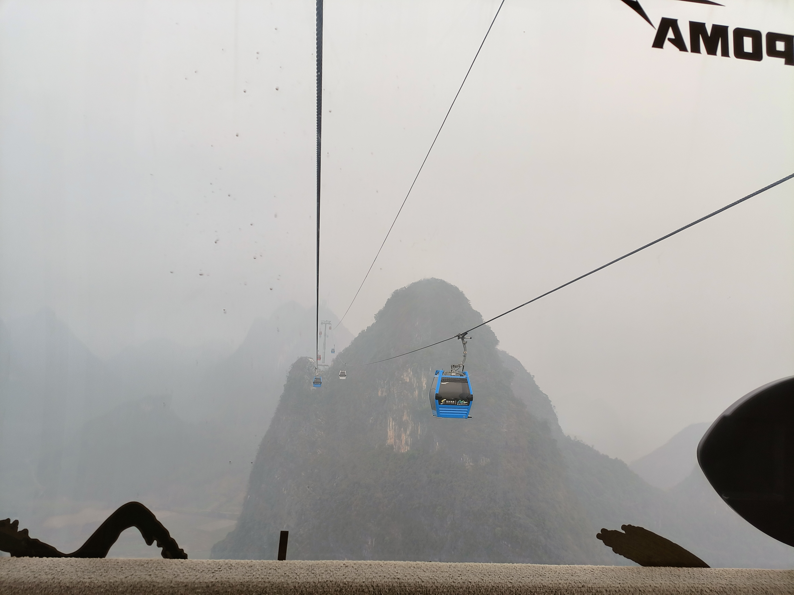
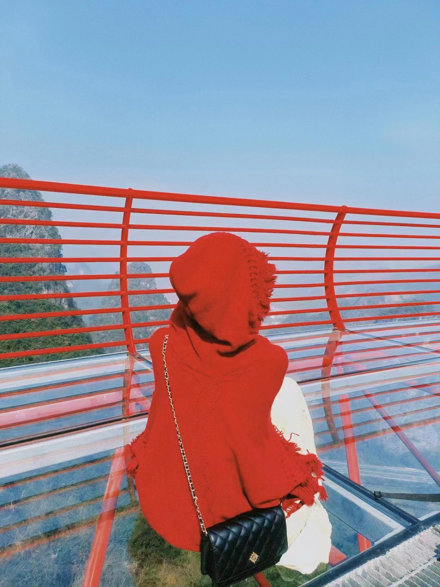
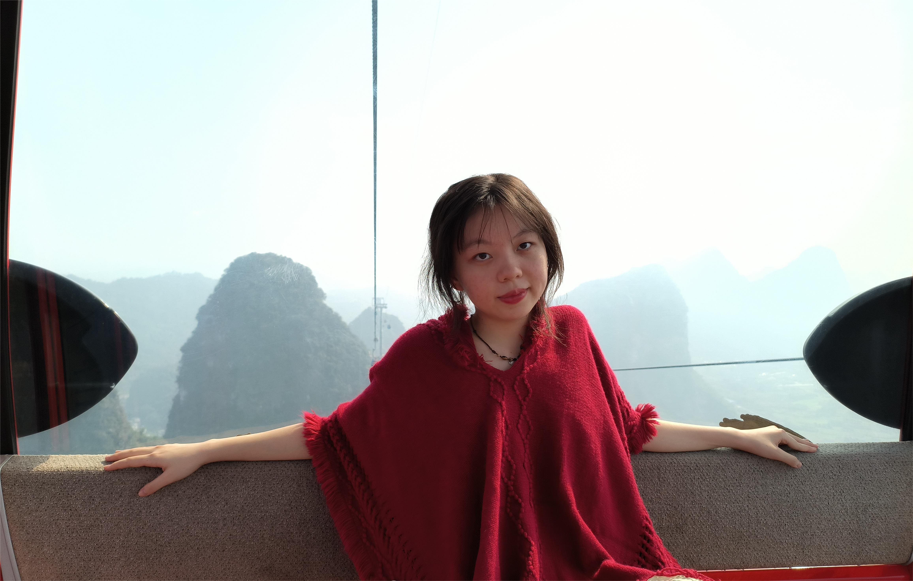
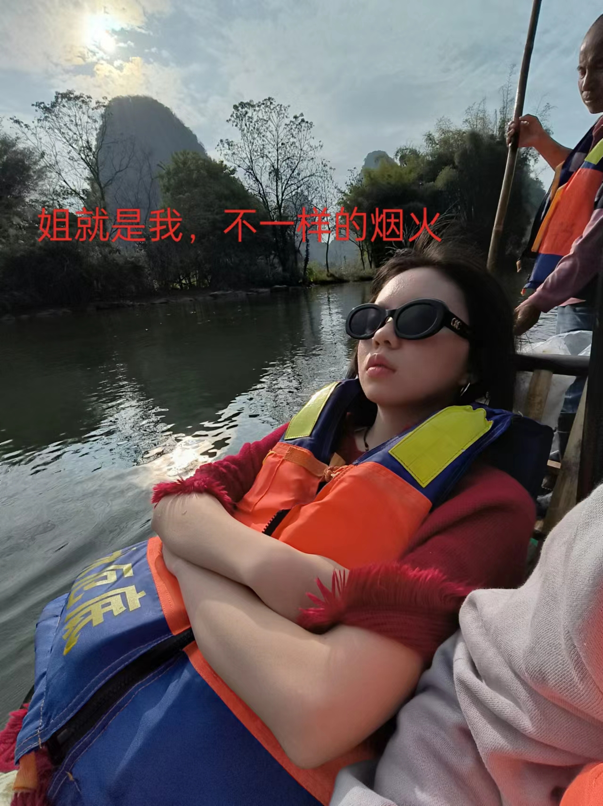
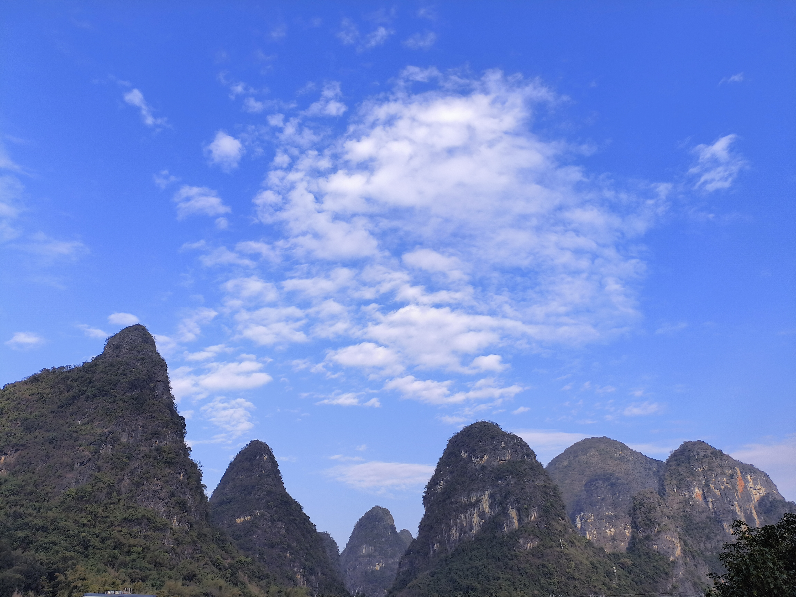

第二天：如意峰and遇龙河！

如意峰,由三座山峰和两个谷地组成，因山峰状似中国传统的“如意”造型，命其名“如意峰”。传闻登上如意峰顶可以在新的一年里万事如意。乘坐观光缆车上山，正值午时，只见云雾缭绕，峰林山涛，水田农舍，群峰竞秀，层峦耸翠，上出重霄，乘高临下，喀斯特地貌尽收眼底，翻越青山之巅，抵达如意峰索道终点。
踏入景区之后，沿着山路行走，首先映入眼帘的是两边系满红色丝带的如意索桥，提心吊胆地踏上索桥，凌空俯视，脚下空谷幽深，林木葱茏；左右望去，眼前视野开阔，田舍交错。丝带在风中飘扬着激情、热烈、吉祥、美好。犹如涉足天地之间，脚踏一片红色祥云。
 随着琪婆战战兢兢走过第一道难关，继续踏上了如意峰登顶之路，一路上蜿蜒曲折，行人稀少，恰似隐秘的角落。经过一番跋涉，终于抵达如意峰之巅。俯瞰全景，万千秀丽，波澜壮阔，心潮澎湃。
随着琪婆战战兢兢走过第一道难关，继续踏上了如意峰登顶之路，一路上蜿蜒曲折，行人稀少，恰似隐秘的角落。经过一番跋涉，终于抵达如意峰之巅。俯瞰全景，万千秀丽，波澜壮阔，心潮澎湃。
一番小憩后，再次踏上了“探险”之旅，在前方等待的是林中漫步玻璃栈道，一条尽情眺望万千峰林的空中走廊，浑然天成，漫步于两峰之间，峰林山水尽收眼底，让人无比舒畅。


小心翼翼地翻越两道玻璃栈道，顺利回到乘坐索道之处，下山之路琪婆明显大胆起来，不忘欣赏缆车窗外景色，与上山时空山不见人相比，终于能在过往缆车中看到其他游客。随着缆车平安抵达，如意峰之旅就此告一段落，希望新的一年里幸福安康，万事如意。
都说“桂林山水甲天下，阳朔山水甲桂林”，遇龙河竹筏漂流则是欣赏阳朔山水不可或缺的项目。坐上原始古朴的竹筏，仿佛一瞬间踏入世外桃源，两面青山围绕，绿水相映，幽林翠竹，碧影清波，身处在这举世无双的山水画卷中，感受大自然的鬼斧神工，闭上双眼，暂时忘却了一切烦恼忧愁。


登时恰逢淡季，沿途人烟稀少，田野风光尽收眼底，两岸青山清秀迤逦，连绵起伏，形态万千，河边小路整洁干净，空气沁人心脾，让人感觉返璞归真，更加向往田园生活。正是山河远阔，人间烟火。
驱驶电车徘徊在十里画廊，沿着遇龙河一路前行，感受到了别样的乡村田野风光，鸡田农舍，幽径小车，清风拂面，歌声悦耳，赏湖光山色，共度此间乐，盼时光定格。

 打卡完稻田咖啡和村上春树咖啡馆，在美团找到一家私房菜，位于乡间小路旁，环境闲适淡雅，置身乡野田园，给人一种超然物外之感，不免想起古人云“采菊东篱下，悠然见南山”，大概就是这般景色吧。当然，出品也不错呢，在这里边吃饭边感受日落黄昏，着实让人流连忘返。
打卡完稻田咖啡和村上春树咖啡馆，在美团找到一家私房菜，位于乡间小路旁，环境闲适淡雅，置身乡野田园，给人一种超然物外之感，不免想起古人云“采菊东篱下，悠然见南山”，大概就是这般景色吧。当然，出品也不错呢，在这里边吃饭边感受日落黄昏，着实让人流连忘返。
吃完饭也天黑啦，第一次“开夜车”，平安到家，阳朔之旅基本告一段落，明天一早杀去柳州！